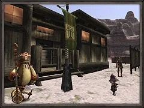

Level 75 reference · Zenith rules


*Garrison content is currently inactive on Eden
The purpose of Garrison is to defend an outpost from attacking beastmen with up to an alliance of adventurers. The beastmen will attack in 4 waves; each wave consists of a variety of jobs including melee, mages, and ranged attackers. The final wave will include a beastman boss.
To start a Garrison quest, you need to find a unique rare/ex item in the region to participate in its respective Garrison, and then trade that item to the Conquest Overseer (Outpost Guard) at the region's outpost (see below). Only one item is required for each Garrison run. Anyone can participate in a Garrison, but only Rank 2 or higher citizens of the nation controlling the region can trade the item to the outpost guard and initiate the event. After trading the item to the guard, he will inform you about an attack on the outpost; your job will be to wipe out the invading force while keeping as many NPCs alive as possible: the more NPCs that survive, the more treasure earned.
Participating
Upon initiating the Garrison, one NPC will spawn for every party or alliance member participating. A wave of enemy mobs will then spawn and proceed to attack the NPCs (who will also fight back). After defeating all of the mobs, there will be a short delay before the next wave spawns.
The number of beastmen in each wave depends on the number of players in your alliance:
# of Players 1st Wave 2nd Wave 3rd Wave 4th Wave 1-6 2 2+2 2+2+2 2+2+2+2+NM 7-12 4 4+2 4+2+2 4+2+2+NM 13-18 4+2 4+2+2 4+2+2 4+2+2+NM
After defeating all of the waves, the person who initiated the Garrison can talk to the outpost guard to end the event and for the rewards to be placed in the treasure pool. However, this will not remove the level cap of all participating members---each member will need to speak to the outpost guard to have their level cap removed.
Restrictions
- Passing characters cannot affect the Garrison alliance at all - they can't cure you, or attack the mobs. However, should someone get KO'd, it can be very helpful to have someone who is not participating in the event help with raises after the event is finished.
- Garrison cannot occur in an area where Ballista is occurring. This includes the day for entry, the actual match, and closing (3 game days).
- A player can only trade the item to start a Garrison once per Conquest Tally regardless of zone.
- There is a cool-down period between Garrisons in the same zone. Another Garrison can be initiated exactly 30 minutes after the initiation of the previous Garrison in the same area.
- You have 30 minutes to complete a Garrison or it will end in failure and mobs will depop.
- Enemy mobs will spawn aggressive to the NPCs, and if all NPCs die the Garrison automatically ends in failure. Hence, keeping NPCs alive and holding enmity on all mobs is a priority!
- Outside mobs can link and be aggressive to players inside garrison.
- You may not make use of your Adventuring Fellow.
- However, any buffs you have will not wear off when the Garrison commences.
- Number of experience items will drop +1 per every 6 players at end of event.
Locations
|
Region/Zone |
Guard Position |
Level Cap |
Item Needed |
Drops From |
Treasure |
|
H-6 |
20 |
||||
|
D-10 |
20 |
||||
|
G-9 |
20 |
||||
|
E-7 |
30 |
||||
|
H-7 |
30 |
||||
|
E-5 |
30 |
||||
|
K-6 |
30 |
||||
|
I-8 |
30 |
||||
|
F-6 |
30 |
||||
|
H-9 |
40 |
||||
|
G-11 |
40 |
||||
|
H-9 |
40 |
||||
|
F-10 |
50 |
Quicksand Caves, |
|||
|
H-8 |
50 |
||||
|
I-8 |
50 |
||||
|
G-8 |
75 |
Strategy
See Strategies.
Adapted from Eden Wiki: Garrison · Contributors and history · CC BY-SA 4.0. Revision 45311. Layout, links and optional background text adapted for Zenith.